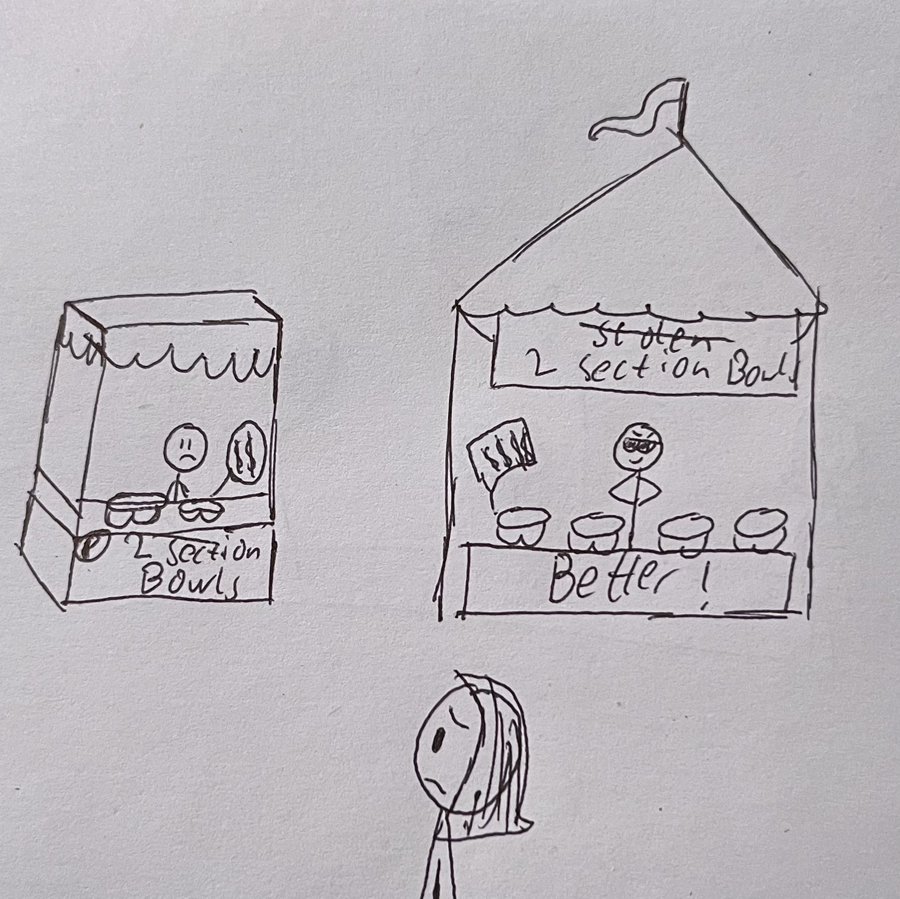

<!DOCTYPE html>
<html lang="en">

</html>
<head>
    <meta charset="UTF-8" name="viewport" content="width=device-width, initial-scale=1.0">
    <link rel="stylesheet" href="styles.css">
    <link rel="icon" type="image/png" href="picon2.png">
    <title>Assessment 3</title>
</head>


<body>
    <br>
   <h1>©Plastasteel's Satisfied Customers and Questions Page</h1>
<br>
       <nav class="navbar">
            <ul>
                <li><a href="index.html">Welcome</a></li>
                <li><a href="beginning.html">Beginning</a></li>
                <li><a href="conflict.html">Conflict</a></li>
                <li><a href="ending.html">Ending</a></li>

            </ul>
       </nav>
<br>
<br>
<br>
<br>
<br>
<br>
    <h2>Olivia's Concern</h2>
        <div id="conflict">
            <br>
            <p>Upon exiting the shop with Olivia, we asked if there were any critiques or problems she had with ©Plastasteel:</p>
            <br>
            <div id="oliviaspeak">
                <p><i>"I like seeing all of these companies within the store picking up on your plastic stuff, I know it's really helped out me and my neighbours out in a pinch. The thing is I... try to be a very enviormentally mindful person, And just from how I've been using your product I'm worried about a few things, especially if you plan to take it world wide. My concern is that with this technology we're just contributing to porblems that already exist?</i></p>
            </div>
            <br>
            <p>Olivia goes on to further explain some flaws she's noticed with the product, we've compiled them below in a short slideshow of problems and her thoughts on them:</p>

            <br>
        </div>

    <h2>Customer Concerns</h2> <!-- Just an FYI that this section was not my original plan to tell the story. I tried to replicate the second slideshow shown in week 7 and have each image and text when clicked on change to illustrate the characeter talking about the possible issues of Plastasteel. It turned out to be wayyyy too complicated to work out just from the website's code and I couldn't find a tutorial to show me what I wanted to achieve.   -->
<!-- Slideshow container -->
<div class="slideshow-container">

  <!-- Full-width images with number and caption text -->
  <div class="mySlides fade">
    <div class="numbertext">1 / 3</div>
    
    <div class="text">What's going to happen to our economy, how will it protect those with small buissnesses? What if someone is able to replicate a deisgn and sell it at an inflated cost? What's protecting people from mega coperations adopting the product. How affordable of an alternative will ©Plastasteel continue to be in the future?</div>
  </div>

  <div class="mySlides fade">
    <div class="numbertext">2 / 3</div>
    
    <div class="text">How is Plastasteel supposed to change the way we think about rubbish? I know I've been reusing old plastic forks, wooden spoons, soft drink cans, cardboard coffee cups, etc, and feeding them into the machine. But what about the plastic packaging on shelves? Even if it is as reusable as you say it is with the fabricator, what's stopping someone from throwing plastic packaging or cans away on the side of the road like any other piece of rubbish? Won't this just contribute to the pollution epidemic?</div>
  </div>

  <div class="mySlides fade">
    <div class="numbertext">3 / 3</div>
    
    <div class="text"> Will ©Plastasteel biodegrade safely or be disposed of without releasing dangerous chemicals into the ozone. What about the harmful microplastics that these products could break down into and affect the enviroment like normal plastic and rubbish is now? Aside from chucking them back into the fabricator to be reused, how can they be safely disposed of when you don't have access to a ©Plastasteel store or home fabricator?</div>
  </div>

  <!-- Next and previous buttons -->
  <a class="prev" onclick="plusSlides(-1)">&#10094;</a>
  <a class="next" onclick="plusSlides(1)">&#10095;</a>
</div>
<br>

<!-- The dots/circles -->
<div style="text-align:center">
  <span class="dot" onclick="currentSlide(1)"></span>
  <span class="dot" onclick="currentSlide(2)"></span>
  <span class="dot" onclick="currentSlide(3)"></span>
</div>
    <br>


<script>
let slideIndex = 1;
showSlides(slideIndex);

function plusSlides(n) {
  showSlides(slideIndex += n);
}

function currentSlide(n) {
  showSlides(slideIndex = n);
}

function showSlides(n) {
  let i;
  let slides = document.getElementsByClassName("mySlides");
  let dots = document.getElementsByClassName("dot");
  if (n > slides.length) {slideIndex = 1}    
  if (n < 1) {slideIndex = slides.length}
  for (i = 0; i < slides.length; i++) {
    slides[i].style.display = "none";  
  }
  for (i = 0; i < dots.length; i++) {
    dots[i].className = dots[i].className.replace(" active", "");
  }
  slides[slideIndex-1].style.display = "block";  
  dots[slideIndex-1].className += " active";
}
</script>

<br>
<br>
<br>


    
</body>
</html>